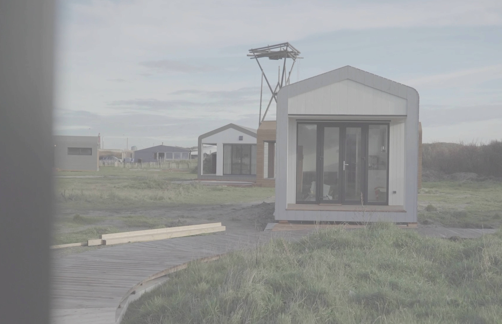
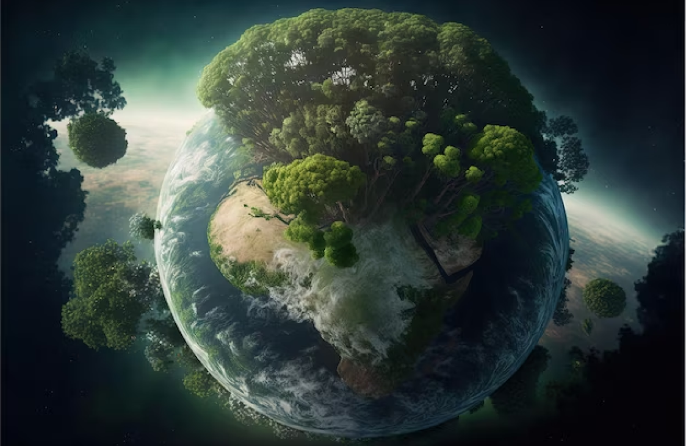

— Rita Maheshwari
How BetterWorldNow Helped Me Take Action for a Better World
As someone who cares deeply about the environment and social issues, I've always wanted to do my part to create positive change. However, I often felt overwhelmed by the scope of the problems we face and unsure of how to make a meaningful impact. That all changed when I discovered BetterWorldNow.

From the moment I signed up for BetterWorldNow, I knew I had found a community of like-minded individuals who shared my passion for creating a better world. The platform's community feature gave me the opportunity to connect with others who were working on similar initiatives and projects.
In addition to the community feature, BetterWorldNow also offered a variety of resources and tools to help me take action. Their guides on sustainable living and reducing waste were invaluable, and I loved the fact that I could track my progress and earn rewards for my efforts.
Perhaps the most impactful aspect of BetterWorldNow, however, was the sense of accountability it provided. Knowing that there was a community of people who were counting on me to do my part motivated me to stay committed and push myself to do more.
Thanks to BetterWorldNow, I feel like I'm making a real difference in the world. By taking action in areas like environmental sustainability, social responsibility, and civic engagement, I'm contributing to a global movement of positive change. And perhaps most importantly, I know that I'm not alone in my efforts. Together, we can create a Better World Now.